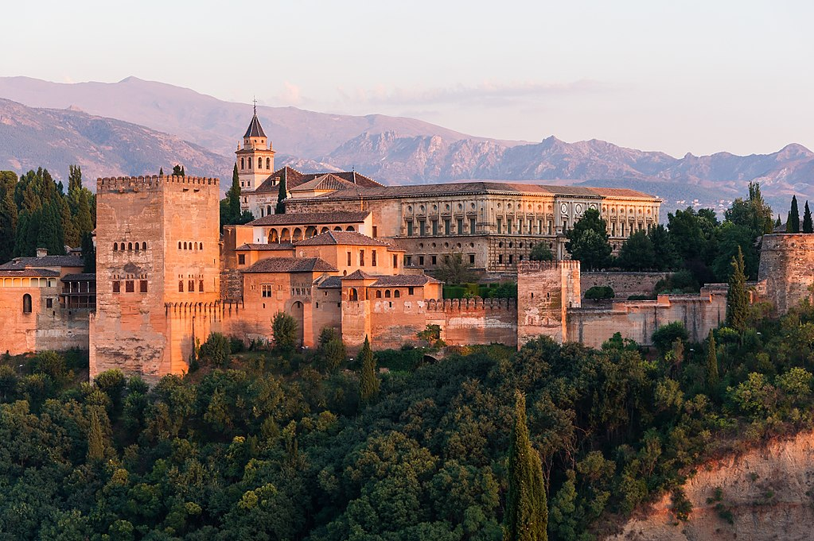
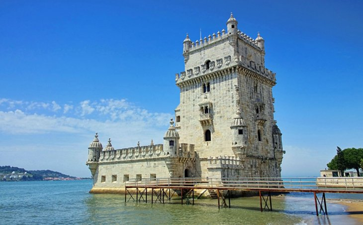
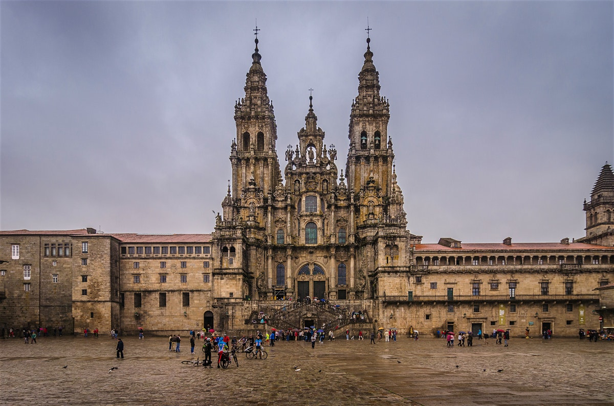

The first destination on my adventure through the mountains of the Iberian Peninsula is the Alhambra Palace in Granada, Spain.

Built in 889 AD on the remains of Roman fortifications, this palace is a piece of history in itself. It was rebuilt and rebuilt up until the year 1526 making it a vessel of many works of architecture throughout different time periods and dynasties. Described as "a pearl set in emeralds", this complex of different buildings is definitely something to be behold.
The next historic site I have to visit on my imaginary dream vacation to the Iberian Peninsula is Belem Tower in Lisbon, Portugal.

Standing on the River Tagus, Balem Tower is a piece of medieval defense built between 1514 and 1520. As a mix of fortifications and detail, it is considered to be one of the best examples of architecture from the time period. As a lover of architecture, this is a must see.
The final destination on my travel list (if I was forced to choose) would be the cathedral Santiago de Compostela, known as the best cathedral in all of Spain.

Knows as the burial place of Saint James the Great (the apostle of Jesus Christ), The Cathedral of Santiago de Compostela was completed in 1211. This cathedral has been an end place of pilgrimage on the Way of St. James since the Early Middle Ages. Did I mention that in addition to being a lover of architecture and history, I am also a lover of beautiful churches? Well this cathedral fits just that criteria. The outside is truly a piece of amazing architecture and the inside has the beauty of the ancient Romanesque structure.